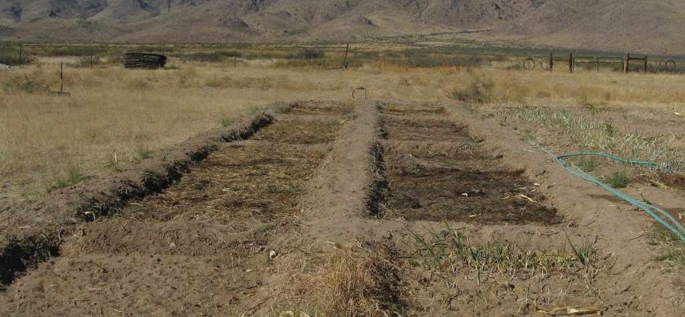
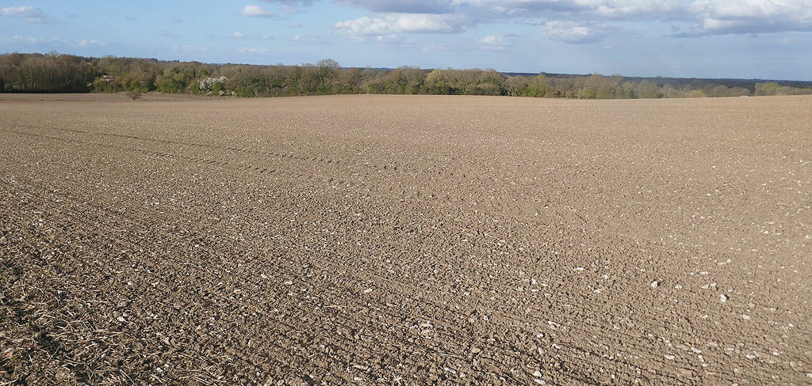

dry regions or during dry seasons. The main challenge with sunken beds is that some topsoil is lost when they are made. This is done by pulling off soil from the bed area and placing it in the surrounding paths. Figure 4.2 shows examples of sunken beds.

Flatbeds:
Flatbeds are seedbeds prepared by levelling the area to be planted. They are used where water availability is adequate and there are no drainage problems. In some areas, crops are initially planted on a flatbed then as the season progresses, soil is thrown into the crop row to mound up the plants. This process is called ‘hilling up’ or ‘earthing up’. This is also done to control in-row weeds, provide support, and improve drainage. For tuber crops, hilling-up keeps the developing tubers covered with soil. Figure 4.3 shows flat seedbeds on two soil types.
